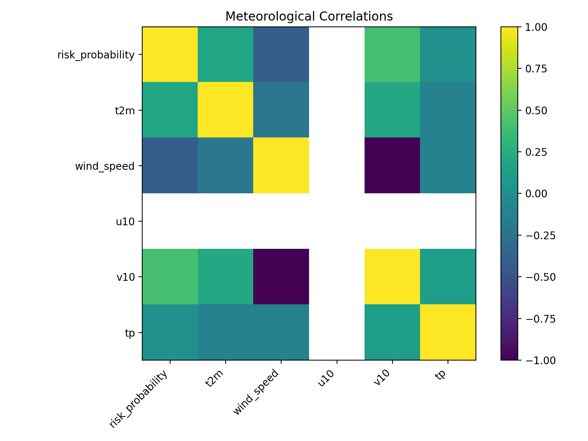
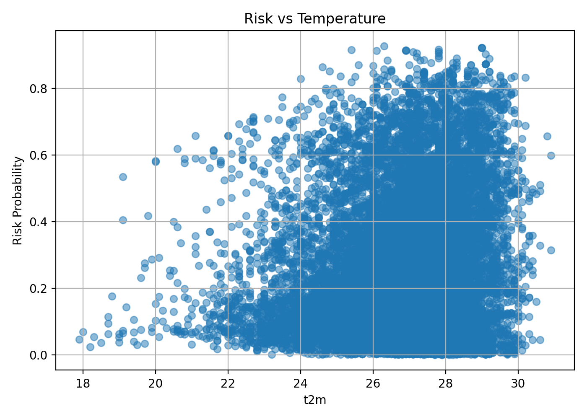

Sardinia Wildfire Risk Assessment
Using Machine Learning
Introduction
Wildfires are among the most complex natural hazards, resulting from the interaction between atmospheric conditions, climate variability and environmental characteristics. In Mediterranean environments such as Sardinia, wildfire risk is strongly influenced by high temperatures, dry conditions, vegetation stress and atmospheric dynamics.
This project investigates the relationship between environmental
variables and wildfire occurrence using a machine learning approach.
The analysis combines meteorological information from
ERA5 reanalysis
,
satellite observations from
NASA MODIS FIRMS
,
and geospatial data.
The objective is to identify environmental conditions
associated with increased wildfire risk and generate spatial indicators useful for risk assessment.
Atmospheric conditions: wind variability and wildfire development
Wind strongly influences wildfire behaviour by affecting ignition, fire spread and intensity. The following animations show wind conditions over Sardinia during the first six months of the year, highlighting temporal variations in wind speed and direction.
The shifting wind patterns shown in the first animation illustrate the continuous variability of wind direction across time. This dynamic behaviour of the atmosphere plays a key role in wildfire development, as changes in wind flow can alter fire propagation pathways and intensity. Strong winds can accelerate fire propagation, increase flame intensity, transport embers over long distances and promote new ignitions. Variability in wind direction can also create complex fire behaviour, making wildfire evolution harder to predict.
To provide a more detailed overview of these wind characteristics, the wind rose summarizes the dominant wind directions and their frequency of occurrence. Each sector represents the direction from which the wind originates, while the different colours indicate wind speed ranges. The length of each sector reflects how often the wind blows from that direction. Wind roses provide an effective overview of the prevailing wind regime and help identify the wind patterns that may favour wildfire spread and smoke dispersion.
The combined interpretation of the wind field evolution and the wind rose provides important information for wildfire risk assessment: periods characterized by strong and variable winds may create favourable conditions for rapid fire growth and irregular fire propagation. The wind rose is particularly useful for identifying the most probable directions of fire spread under typical atmospheric conditions, while also highlighting less frequent but potentially critical high-wind events capable of increasing flame intensity, enhancing ember transport, and causing sudden changes in fire behaviour. When associated with other factors such as high temperature, low humidity, and dry vegetation conditions, these wind patterns can significantly increase the potential for wildfire development and spread.
Data sources (ERA5 + FIRMS)
The study integrates three primary data sources.
-
Metereological data -
ERA5 Reanalysis
**Source:** https://cds.climate.copernicus.eu/
ERA5 provides atmospheric variables describing weather conditions, including: * air temperature (`t2m`)
* total precipitation (`tp`)
* eastward wind component at 10 m (`u10`)
* northward wind component at 10 m (`v10`)
The original ERA5 data are processed and transformed into analysis-ready variables suitable for machine learning applications. -
NASA MODIS FIRMS , - Fire Information for Resource Management System
**Source:** https://firms.modaps.eosdis.nasa.gov/
NASA MODIS FIRMS provides satellite-derived thermal anomaly (hotspot) detections, which are used as indicators of potential wildfire activity. A thermal anomaly does not necessarily correspond to a confirmed wildfire and should always be interpreted together with meteorological and environmental conditions. Satellite thermal anomaly observations used as indicators of wildfire activity. -
Geospatial data
**Source**: OpenStreetMap contributors. https://www.openstreetmap.org (© OpenStreetMap contributors) A GeoJSON file containing the geographic boundaries of Sardinia is used to define the study area and support spatial analyses. The dataset is employed to clip meteorological and satellite observations to the region of interest and to enable spatial visualization and geospatial processing.
Machine Learning approach
The integrated dataset is processed through a machine learning workflow including preprocessing, feature engineering, model training and evaluation. Several machine learning models were evaluated for the Sardinia fire risk prediction task, including Random Forest, XGBoost, and LightGBM classifiers. The models were trained using a temporally separated dataset, with historical years used for training, intermediate years for validation and threshold optimization, and the most recent years reserved for final testing.
The original meteorological inputs include temperature, precipitation, wind components and wind speed. Additional predictors are generated through feature engineering, creating fire-weather indicators, atmospheric dryness metrics, seasonal variables and temporal features describing the evolution of weather conditions over time.
Random Forest achieved a ROC-AUC of approximately 0.847 and a PR-AUC of 0.27,
while XGBoost slightly improved the ranking performance with a ROC-AUC of approximately 0.854 and a PR-AUC close to 0.29.
LightGBM reached a comparable ROC-AUC (≈0.853) but provided the highest operational performance in terms
of fire detection capability, achieving a recall of approximately 0.67 on the independent test set after threshold optimization.
Since the main objective of the system is early wildfire detection and minimizing missed fire events,
LightGBM was selected as the final model because it provided the best balance
between predictive performance and operational recall, detecting about two-thirds of the observed fire events while maintaining an acceptable false alarm rate.
MODEL PERFORMANCE SUMMARY (RISK ESTIMATION) The model is designed for fire risk estimation (not classification). DATA - Total samples: 3,326,796 - Fire events: 31,138 (~1%) MAIN RESULTS - ROC AUC: 0.9187 → strong ranking ability - PR AUC: 0.1313 → good signal over strong imbalance THRESHOLD: 0.8332 - Recall: 50% → detects half of fire events - Precision: 10.25% → many alerts, low hit rate CONFUSION MATRIX - TP: 556 - FN: 556 - FP: 4,868 - TN: 138,956 INTERPRETATION - Strong at ranking risk levels - Suitable for early warning / prioritization - Not a binary fire detector - False positives acceptable in risk context CONCLUSION Effective model for risk scoring and resource prioritization.
Implemented using:
Python pandas · numpy · xarray · geopandas · scikit-learn · LightGBM
Environmental Analysis
Before generating the risk maps, an exploratory analysis was performed to investigate the relationship between meteorological variables and the wildfire risk predicted by the machine learning model.
Interpretation of the Correlation Matrix
The correlation matrix provides an initial assessment of how the main meteorological variables are related to the wildfire risk predicted by the machine learning model.
The positive correlation between wildfire risk probability and air temperature (t2m) suggests that warmer atmospheric conditions are generally associated with a higher likelihood of wildfire occurrence. This is consistent with the fact that high temperatures contribute to fuel drying and increase vegetation flammability.
The positive correlation observed for the northward wind component (v10) indicates that specific wind patterns may influence wildfire risk. Wind affects both fire ignition conditions and the potential spread of existing fires by supplying oxygen and transporting heat and embers.
In contrast, precipitation (tp) exhibits only a weak linear relationship with the predicted wildfire risk. This does not imply that rainfall is unimportant; rather, its effect on wildfire conditions is often indirect and may depend on its accumulation over time and its interaction with other environmental factors. Daily precipitation alone may not fully represent the impact of rainfall on vegetation conditions and fuel moisture, as the effects of rainfall can persist over longer periods and influence drought-related conditions.
Overall, the correlation matrix highlights the environmental factors most closely associated with wildfire-prone conditions. It should be regarded as an exploratory analysis that helps identify general trends in the data, while the final wildfire risk predictions are produced by a LightGBM model capable of learning complex non-linear interactions among multiple meteorological variables.

While precipitation shows a weaker direct relationship with predicted wildfire risk, air temperature exhibits a clearer influence on the model predictions. The scatter plot illustrates the relationship between air temperature (t2m) and the wildfire risk probability predicted by the machine learning model.
Overall, higher temperatures are associated with an increased probability of wildfire occurrence. At temperatures below approximately 22–23 °C, the predicted wildfire risk remains consistently low.
As temperature increases, the distribution of predicted probabilities becomes progressively wider, indicating that additional environmental factors contribute to wildfire risk.
Above approximately 27–28 °C, the model frequently predicts moderate to high wildfire risk. However, the wide vertical spread of the points indicates that temperature alone is not sufficient to explain wildfire occurrence. Instead, wildfire risk is better represented by the combined effect of multiple meteorological drivers. The machine learning model integrates temperature with other variables, including wind conditions, precipitation, drought indicators, and their temporal dynamics, to produce a more comprehensive estimate of fire risk.
This figure highlights the nonlinear nature of wildfire prediction and illustrates how the model integrates multiple environmental drivers rather than relying on a single meteorological variable.

Risk Maps
The final outputs are spatial wildfire risk maps describing areas
associated with environmental conditions favourable to wildfire
development.
Different Machine Learning configurations and modelling choices
can produce different spatial risk distributions.
The objective is not to identify a single "best" map,
but to demonstrate how the model can transform predictions
into spatial risk information.
Risk maps can be used to:
- identify high-risk areas
- prioritize monitoring activities
- support resource allocation
- compare different risk scenarios
Different maps represent different model assumptions
rather than different truths.
The risk map should be interpreted as a probabilistic indicator
of fire susceptibility, not as a deterministic prediction.

The 14‑day wildfire risk map for Sardinia shows a gradual intensification of fire danger across the island, with early days marked mostly by low to moderate risk and later days revealing expanding zones of high and very high probability. The color progression from blue and green toward orange and red highlights how dry conditions and rising temperatures increase vulnerability, especially in central and southern areas. Overall, the sequence of daily panels illustrates a clear upward trend in fire potential, helping anticipate when and where ignition and spread are most likely.
Repository
The complete workflow, scripts and documentation are available in the project repository.